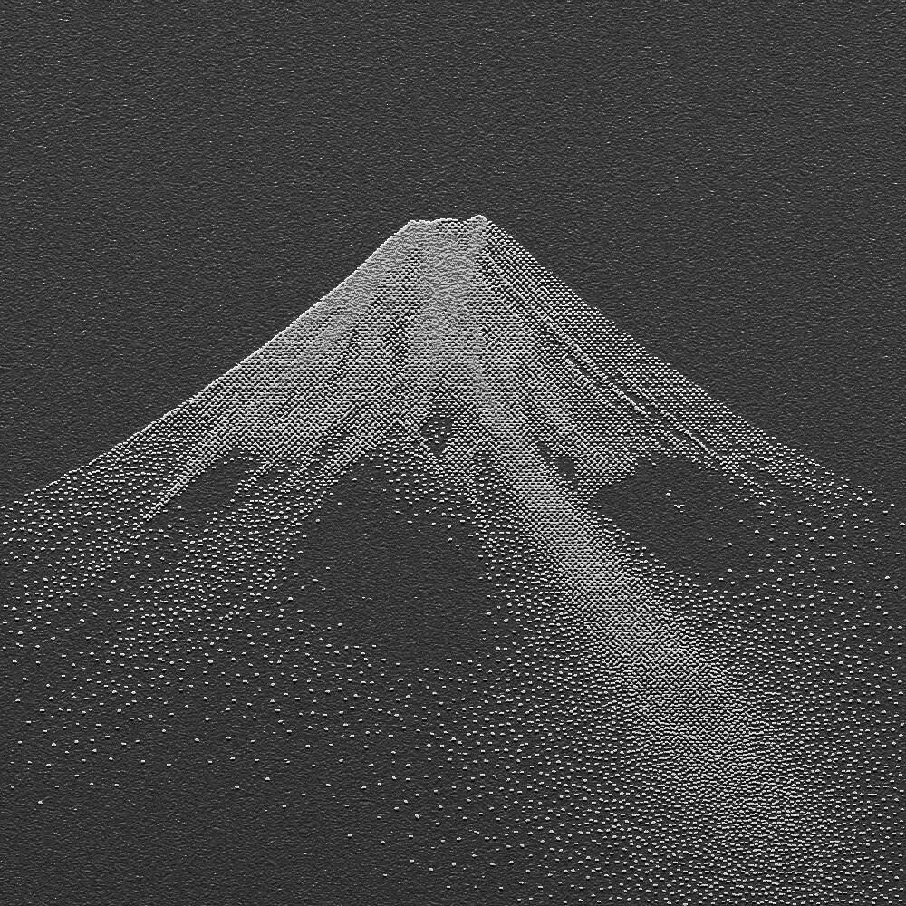
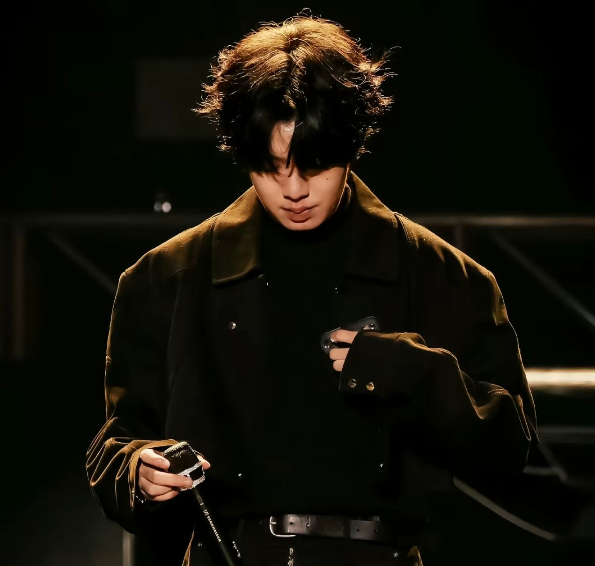

| 姜云升 |
点击右方专辑照片欣赏歌曲
|
 |
|---|
| 姜云升，本名姜振乾，1996年6月1日出生于云南昆明，中国内地说唱音乐人、词曲作者。 他最早活跃于地下battle赛场，曾拿下地下八英里昆明赛区 冠军，凭借清晰的逻辑、极强的即兴应变能力在地下说唱圈积累名气。2020年，他参加B站说唱综艺《说唱新世代》，最终获得全国九强，走入大众视野。和1很多注重炫技的说唱不同，姜云升的作品偏向叙事与抒情，歌词常常围绕迷茫、自我接纳、普通人的挣扎、理想与现实的落差展开，带有浓厚的思辨色彩。他的歌没有刻意堆砌华丽辞藻，直白真诚，很容易引发年轻人的共鸣。代表作有《你一定能够成为你想要去成为的人》《芸芸众生》《浪漫主义》《孤独面店》《淹没》等。 他先后发行《初》《丙子》《不息》等多张音乐专辑，持续进行全国巡演。2024年，姜云升创立个人说唱厂牌风炎文化，持续挖掘、扶持说唱新人。除音乐创作外，他也经常在演出和线上分享自己对创作、生活的看法，保持着独立的创作态度。
|
 |
| 返回首页 |